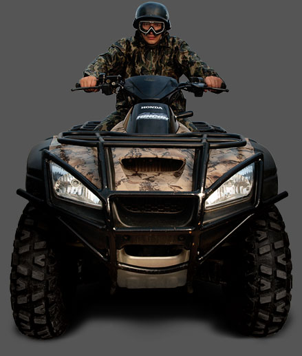
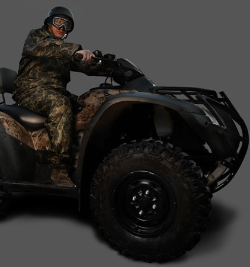

Телефоны для заказа прогулок уже сейчас:
+7 978 126 12 00Клуб активного отдыха Quadro-active 4x4 предлагает Вам совершить увлекательные прогулки на квадроциклах марки Honda. Прогулки на квадроциклах происходят по интересным маршрутам совмещающих пересеченную местность и раздолье равнин с горным экстримом различной продолжительности.

Honda FourTrax Rincon тестировался в нескольких различных условиях, на нем ездили по смеси сухой и пыльной дороги с крутыми подъёмами и спусками. Мы также смогли испытать его в крутых поворотах, болотах и во время дождя, при всех этих условиях мы смогли протестировать все компоненты квадроцикла, начиная от электроники и заканчивая подвеской, мы даже сумели испытать его на снегу.
Honda один из самых консервативных производителей квадроциклов, которые работают по принципу “Если ничего не ломается, значит ничего не нужно исправлять”.
Система переключения передач, позволяет переключать их и в ручную Одноцилиндровый 675cc четырехтактный двигатель расположен на продольном стальном шасси Rincon, это обеспечивает более прямую и эффективную передачу мощности на землю. С жидкостным охлаждением с особым сухим картером и верхним расположением клапанов, что способствует по заявлению Honda низкому центру тяжести и хорошему дорожному просвету Rincon.
Двигатель подсоединён при помощи эксклюзивного гидротрансформатора, а не ременным приводом к автоматической коробке CVT ( как у конкурентов), которая имеет три электронные передачи ESP. Это означает, что вы можете ездить на этом квадроцикле как с автоматическим переключением передач, или сдвигая три передачи вперед и назад большим пальцем левой руки. Хотя все любят удобство автоматической коробки передач, но также часто все используют ESP в Honda, что бы контролировать крутящий момент, обороты и переключение. Переключатель выполнен в автомобильном стиле он не большой и не страшный, а его расположение очень удобное. Он удачно подобран под руль и расположен с левой его стороны, на нём расположены значки конфигурации, которые очень легко понять и вы уж точно не ошибетесь при переключении.
В целом Rincon можно охарактеризовать как хороший квадроцикл с довольно предсказуемым управлением. На нём установлена система электронного впрыска топлива. Особенно понравится газ на медленной скорости, когда управление дроссельной заслонкой играет ключевую роль, тут всё очень гладко и сбалансировано. Благодаря этому Rincon без особых трудностей взбирается на очень трудные склоны. Ещё одной положительной чертой Rincon является его переключатель Traxlok, это дифференциальный выключатель. Он расположен с правой стороны руля и очень удобен, с его помощью в любой момент можно переключатся на привод на два колеса или обратно в полный привод. Тем не менее, блокировка дифференциала не полная, то есть при переключении из режима полного привода, задние колеса всё равно работают, просто повышается мощность передаваемая на передние.
Полностью независимая подвеска, обеспечивает 10 дюймов дорожного просвета и крепится к раме болтами. Впереди Rincon установлены двойные поперечные амортизаторы с рычагами для хода подвески. Амортизаторы отлично сглаживают грубые ямы и жесткие повороты, при этом не обременяя вас.
Не смотря на это 6,9 дюймов между колесами делают езду очень удобной и надежной. Задняя часть подвески этой машины сделана из труб из кованного алюминия, для уменьшения общего веса.
Подвеска Honda при не самом лучшем дорожном просвете, вполне вдохновляет и делает поездки на этом квадроцикле очень комфортной. Такая подвеска удобна при любых типах местности.
Кроме того, благодаря низкому центру тяжести квадроцикл приобретает спортивных характер.
Все эти конструкционные особенности рамы и подвески, делают вес Rincon более легким, позволяя достичь на нём необходимый уровень эргономики. В целом подвеска не слишком плюшевая и не слишком жесткая, но благодаря удачной конфигурации работает она хорошо.
Ручка тормоза удобно размещена на руле, и отлично чувствуется. Кроме того, вы никогда не перепутаете заднюю и переднюю ручку тормоза, в отличии от однорычажного дизайна. Для остановки FourTrax Rincon водитель всегда может воспользоваться передние ручные тормоза или задний ножной тормоз (под правой ногой), что идеально подходит для всех водителей.
Лёгкий вес и низкий центр тяжести, позволяет легко проходить повороты Кроме того, такая конфигурация идеальна при подъёмах и спусках с холмов. Honda разместили сзади большой и мощный гидравлический дисковый тормоз и саморегулирующийся механический задний стояночный тормоз, который блокирует задний карданный вал (а не задние колёса), это сделано прежде всего для улучшения дорожного просвета квадроцикла. Honda хорошо проработали тормоза, они конечно же не лучшие в этом классе, но силы их вполне достаточно.
Все люди конечно же любят различные мелочи и аксессуары и Rincon имеет их очень много. Здесь вы найдете удобства вроде 12-вольтовой розетки, которая ещё и водонепроницаемая, бардачок, LCD экран, воздушный моющий фильтр и электро-старт двигателя.